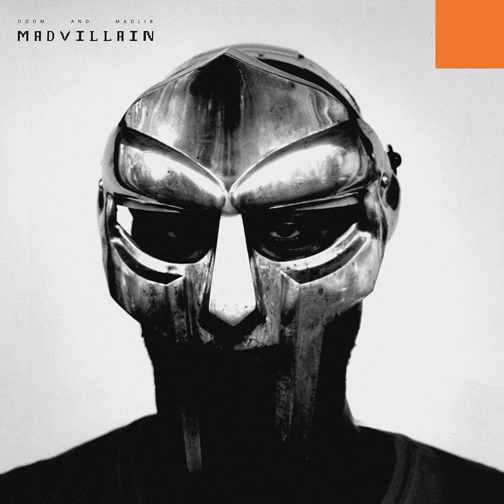

The british, hip hop rapper known as MF DOOM is actually known as Daniel Dumile when you remove the mask. Being one of the most influencial rappers of the world, he gained the title of "your favorite rapper's favorite rapper".

The album cover for MF DOOM and Madlib's collaborative work, Madvillainy. Known as one of his most influencial albums, it dives into the consiqueces of becoming someone you never wanted to be in the act of survival.
Built by LINCOLN JENT · BMIS 235